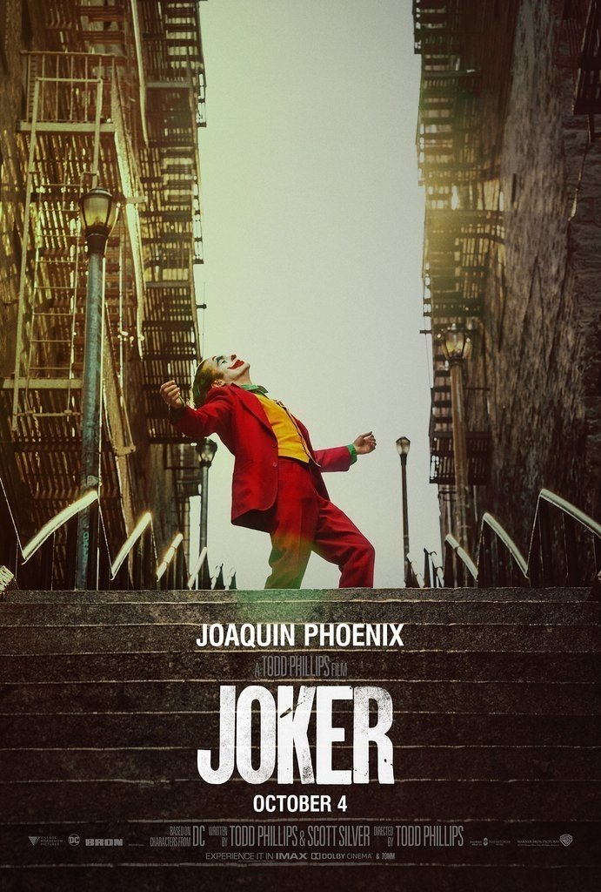

Resultado de búsqueda: Joker

JOKER
- CALIFICACIÓN:⭐⭐⭐⭐
- Fecha de estreno: 04/10/20219
- Duración: 2h 2m
- Género: Thriller
- Sinopsis: Arthur Fleck adora hacer reír a la gente, pero su carrera como comediante es un fracaso. El
repudio social, la marginación y una serie de trágicos acontecimientos lo conducen por el sendero de la
locura y, finalmente, cae en el mundo del crimen.